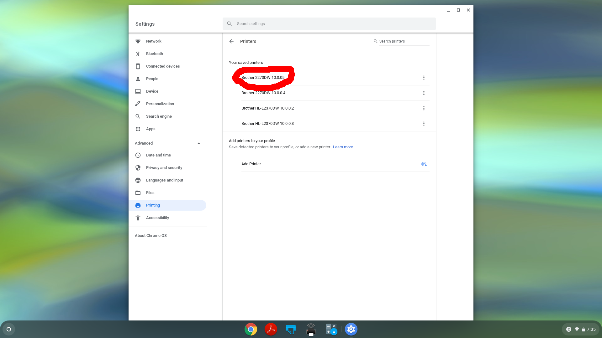

Click on the icon at the bottom right corner of the screen:
Click on the gear icon:
Click "Advanced":
Click "Printing":

Click "Printers":

Click the icon to the right of "Add Printer":

Fill in a name for the printer; it's a good idea to include the IP address in the name, either 10.0.0.2 or 10.0.0.3. Fill in the address to match. Then click "Add".

You should see the new printer in the list.
Fill in a name for the printer; it's a good idea to include the IP address in the name, either 10.0.0.4 or 10.0.0.5. Fill in the address to match. For "Protocol", choose "Line Printer Daemon (LPD)"; for "Queue" type in "BINARY_P1". Then click "Add".
In the Advanced printer configuration, set "Manufacturer" to "Generic" and "Model" to "Generic Greyscale PCL 6/PCL XL Printer". Click "Add".
The printer should show up in the list of saved printers.
